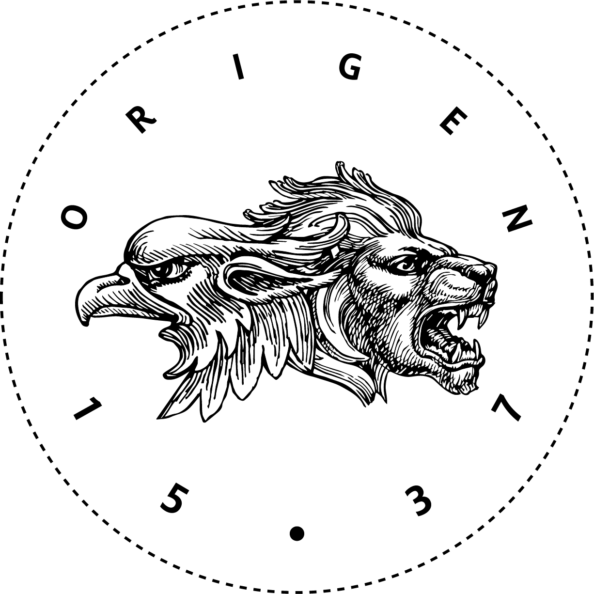

About Me

Welcome to this beautiful and straight forward website where I showcase my abilities and skills as Full Stack Engineer. I also think that an important point, for future recruiters or customers, is to know who is exacly Nicolas Kennof. Well in the next lines I will intend to answer in the best way I can... I hope it will not confuse you!
A [Digital] Marketer
This is the pro description of myself for the tasks I spend the most time during the week... employee, you know!
Strategic, results-oriented Marketing Manager with 6+ years’ experience implementing marketing strategies, brand management and positioning, digital marketing and media planning. A creative marketer with a strong background in B2B marketing, having implemented marketing automation and CRM in the past years. Recognized for collaborative leadership style, proactive approach, and keen ability to effectively translate complex business strategies into tangible action plans. A proven leader with a strong presence, capable of seeing the big picture with tactical considerations to inspire, build trust, and achieve record growth.
Sounds nice hey! Well feel free to put yourself in contact with me right know if this sounds like you need to level up your marketing efforts.
A Brewer
Since 2017, I co-founded a brewery located in Puebla, Mexico. The true reason behind that project is that, as a beer-lover living in Mexico I was not able to find any beer truly delicious as the ones in my homeland, Belgium. So there we are: we cannot find it so let's produce it and sell it to whoever wants to drink great belgian style beers. We define our brewery by its ethnical influences:
Origen 1537 raises the fusion of two ancient cultures that is intertwined by the love of fine drinking and eating. This merger was first made in 1537, when the Viceroy of New Spain imported three Belgian brewers to establish the first brewery in Mexico. It is with this same intention that a group of young entrepreneurs founded Origen 1537, an innovative brewery that seeks to satisfy the taste, increasingly demanding, of the artisanal beer consumers, to complete their moments of conviviality when eating and drinking.
Appetized? Feel completely free to get in contact with me and I will be very pleased to delight you with the new tastes of Mexico!

An Entrepreneur-Minded
Still not having enough with what I am doing right now, I am already planning on implementing new online businesses in the next few months. The idea behind that is to generate "passive" businesses that would allow my wife and myself to dedicate more time to our real passion: traveling the world! We plan on different online platforms combining both her and my knowledge in order to propose new solutions to recurring, common problems in dental health and eating habits. We will will make sure you will stay posted of our coming projects.
Remember to visit my portfolio. That is the actual reason you are on this page!